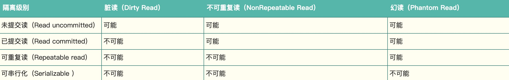

事务隔离级别
本文将以 Mysql 为例，探讨数据库的事务隔离。

- 未提交读(Read Uncommitted)：允许脏读，也就是可能读取到其他会话中未提交事务修改的数据
- 提交读(Read Committed)：只能读取到已经提交的数据。Oracle 等多数数据库默认都是该级别 (不重复读)
- 可重复读(Repeated Read)：可重复读。在同一个事务内的查询都是事务开始时刻一致的，InnoDB 默认级别。在 SQL 标准中，该隔离级别消除了不可重复读，但是还存在幻象读
- 串行读(Serializable)：完全串行化的读，每次读都需要获得表级共享锁，读写相互都会阻塞
未提交读和串行读，一般很少用，在这里不做讨论。
提交读
提交读对读操作不加锁，但对插入、修改、删除等操作加行锁。
设置 session 隔离级别为 RC。
SET session transaction isolation level read committed;加锁过程分两种情况讨论：
有索引：直接锁住索引命中的行；没有索引，mysql 首先默认锁住全表，但在过滤完筛选条件后，不满足条件的行会被释放锁（虽然这违背了二段锁的协议），从而保证高性能和高效率。
重复读
读
可重复读，顾名思义，在同一事务里，不同阶段的读取结果是一样的。
不可重复读和幻读
不同点在于锁的机制。
不可重复读：提交读对读操作不加锁，所以同一事务中不同阶段的两次读取结果可能不一致。
幻读：重复读对读操作添加行锁，保证对应行的 update、delete 操作无法进行，但却没有对 insert 操作限制，导致出现幻读。
以上讨论的，是以悲观锁机制来处理问题，在 mysql 和其它成熟的数据库中，出于性能考虑，都是使用以乐观锁为理论基础的 MVVC（多版本并发控制）来避免这两个问题。
悲观锁和乐观锁
悲观锁：指的是对于数据被外界的修改持有悲观的态度（总是假设数据可能被修改），因此，由数据库自身提供锁机制，保证悲观锁的实现。
乐观锁：大多基于数据版本记录机制实现的。（在表中增加 version 字段，读取数据时，读出版本号，更新时，版本号 +1，若版本号大于数据库中的版本号时，允许更新，否则认为是过期数据。
MVVC 在 InnoDB 中的实现
0 每个表加上 2 个字段，一个存储创建版本号，一个存储过期版本号（或已删除）；
1 在每个事务开启的时候版本号 +1；
- SELECT：当前版本号 >= 创建版本号，当前版本号 < 过期版本号（或过期版本号为空）；
- UPDATE：插入新的记录，原本记录的过期版本号为当前版本号，新的记录的创建版本号为当前版本号；
- DELETE：当前版本号为过期版本号；
- INSERT：当前版本号为创建版本号；
幻读的问题解决了，但还有并发写的问题。
写
“读”与”读””
数据库的读：快照读（snapshot read）select
事务隔离的读：当前读（current read）update insert delete
快照读，不加锁，当前读，加锁（Next-key 锁）
Next-key 锁
Next-key 锁 = 行锁 + Gap 锁

假设有 id 为 5，30 两条数据，更新修改 30
有索引：加 30 行锁，同时给（5-30）（30，+∞）加 Gap 锁。
没索引：全表 Gap 锁
假设有 id 为 5，30 两条数据，事务 A 修改 20，事务 B 增加 10，id 为普通索引
事务 A：加（5，30）Gap 锁
事务 B：等待 A 完成
事务 A：解锁，完成
事务 B：插入数据，完成
由上可以看出，即使没有修改，数据库也会给数据加 Gap 锁，从而影响其它事务任务的执行。
假设有 id 为 5，30 两条数据，事务 A 修改 20，事务 B 增加 10，事务 C 增加 40，id 为普通索引
事务 A：加（5，30）Gap 锁
事务 B：等待 A 完成
事务 C：插入 40，完成
事务 A：解锁，完成
事务 B：插入数据，完成
由上面可以看出，Gap 影响范围以外的行不受影响